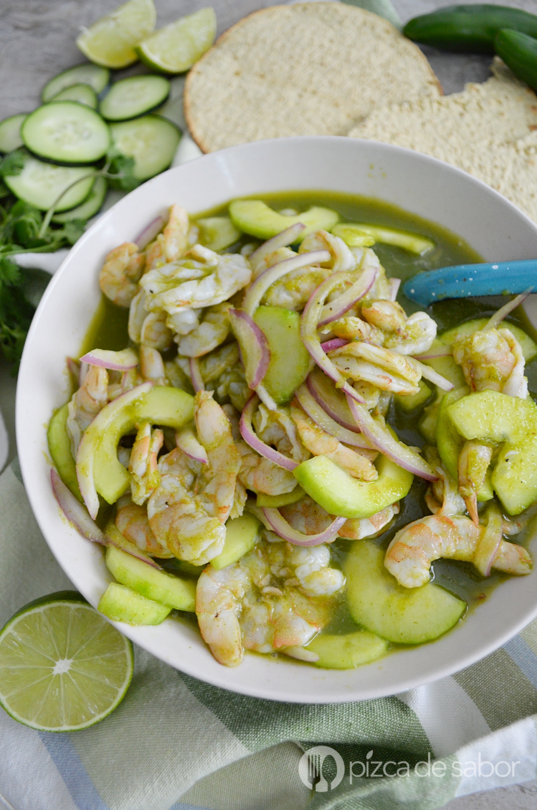

Aguachile

Este aguachile de camarón es perfecto para los días frescos o donde quieres algo sencillo, rápido y delicioso.
Preparar un aguachile es muy fácil ya que solo necesitas preparar una salsita en la licuadora que es la que le va a dar el sabor picante a este platillo y con la que vamos a marinar los camarones.
NOTA
Este platillo se sirve con camarones crudos (o “cocidos” por el jugo de limón), pero si te da miedo o no te gusta comer mariscos crudos puedes cocinarlos primero y cortarlos a la mitad.
Ingredients
- 500 gr camarones crudos
- Jugo de limón
- Pepino pelado y sin semillas
- 2 a 4 chiles serranos picados
- Hojas de cilantro
- Cebolla morada fileteada
- Tostadas de maíz
- Sal y pimienta al gusto
Steps
- Pela y limpia los camarones, quítale la cabeza si todavía la traen y la venita o tira negra. Córtalos a lo largo para hacer un corte mariposa, puedes cortar por completo o dejar el camarón con la forma de mariposa.
- Pela el pepino, corta a la mitad, retira las semillas y corta en medias lunas.
- Licua el jugo de limón, el chile serrano, cilantro, sal y pimienta. Si no te gusta muy picante puedes retirarle las semillas al chile serrano antes de licuarlo, si te gusta muy picante deja las semillas y agrega más chile al gusto.
- Coloca en un bowl o plato los camarones, cubre con la mezcla de limón y chile y marina 30 minutos en el refrigerador.
- Pasado el tiempo mezcla con el pepino en medias lunas y con la cebolla morada.
- Sazona al gusto (en caso de ser necesario) y sirve con tostadas.